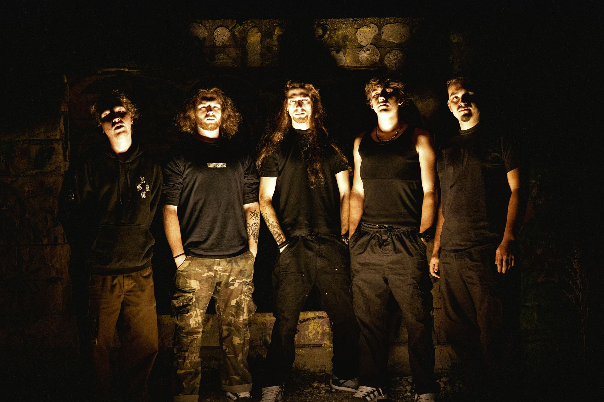

MUSIC
VIDEOS
LIVE

DRAGOȘ
Primul meu contact cu muzica a fost la 6 ani când părinții m-au îndrumat să merg la Liceul de Artă Sibiu, unde am studiat pian. La 9 ani am ajuns din greșeală la o repetiție Revolver (numele de atunci) deoarece eram prieten cu Luca (Barbu) și mergeam la el să ne jucăm. Așa am ajuns să îi cunosc pe băieți și să ocup ultimul loc gol rămas în trupă, locul de vocalist. De atunci și până acum, trupa asta este cheia prin care îmi pot exprima liber fiecare gând/sentiment, și zona mea de refugiu în care simt că pot fi eu însumi!

HARIS
Am început să bat la tobe la o vârstă fragedă, dar numai în 2015 am realizat că muzica este viața mea când am format trupa alături de Ștef, Luca (Barbu) și Victor (Delsuc). Mai nou mă exprim prin compoziție; mixez și produc materialele Revolter împreuna cu Ștef și cel mai tare mă bucur să fiu pe scenă, unde mă încarc cu energia oamenilor. Le mulțumesc tuturor oamenilor care încă ne mai suportă, fără ei am fi complet irelevanți.

MARK
Am început să învăț să cânt la chitară la 6 ani, împreună cu bunica mea. La 12 ani am primit prima chitară electrică și am sperat să ajung cu ea pe cât mai multe scene. Câțiva ani mai târziu am intrat în formația Revolter și de atunci am șansa să împărtășesc pasiunea mea cu tot mai mulți oameni. Le mulțumesc tuturor fanilor, susținătorilor, echipei și colegilor pentru toate experiențele și amintirile din ultimii ani. La cât mai multe în continuare!

ȘTEF
Cânt la chitară de la 8 ani dar de muzică m-am apucat și mai devreme, la 6 ani (pian). În trupă am ajuns să cânt și la voce și continui să îmi dezvolt domeniile de activitate și pe partea de mixing. Am început să compun muzica încă de la 12 ani și faptul ca am o platforma (Revolter) prin intermediul căreia o pot împărtăși este cea mai mare realizare a mea. Sper ca tot ce vreau sa exprim prin muzică să ajungă în sufletul cât mai multor oameni.

TIBI
Primul contact cu corzile a fost la 11 ani, pe chitară, însă basul a fost cel care m-a definit ca instrumentist. Stilul meu s-a format la intersecția dintre lumi destul de diferite: de la dinamica și texturile celor de la Tool, până la groove-ul fluid din Jamiroquai și abordarea percutantă, neconvențională a celor de la Primus. În Revolter încerc să aduc fix acest amestec: linii de bas solide, care țin piesa legată, dar care ies din tipare atunci când contextul o cere.
CONTACT
REQUEST A SHOW
Vrei să venim în orașul tău? Trimite-ne un mesaj și spune-ne unde ai vrea să ne vezi live!
TRIMITE EMAILBOOKING & FESTIVALS
Pentru organizatori de evenimente și festivaluri, ne puteți contacta aici pentru booking.
CONTACTEAZĂ-NE